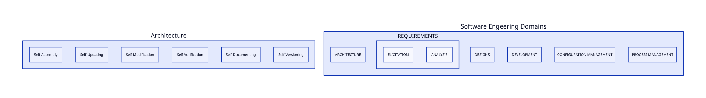
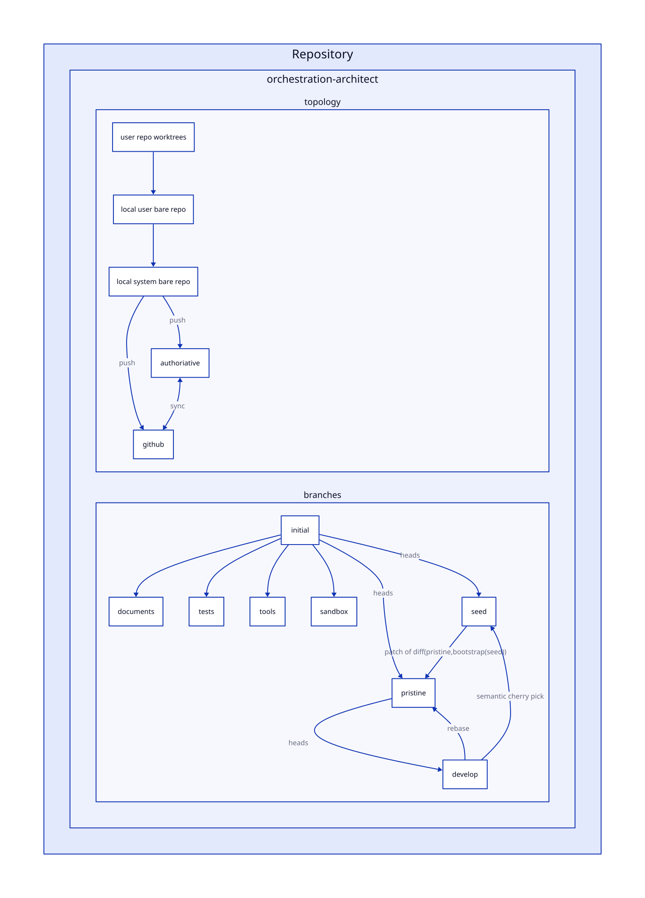
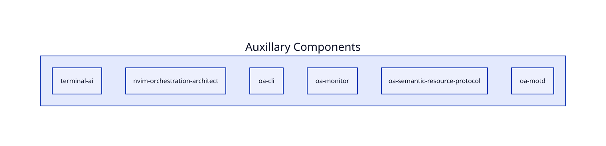

L3
Generates the system.
If existing, this process will regenerate broken parts.
Restores missing components of a system.
This system allows you to unlock the Encrypted Master System and access the data partitions and backups
Used to access encrypted backups, data and systems.
This system allows for migrations to new systems and restoring from backups.
Encrypted persistent portable bootable system.
Generate systems from configurations.
Deploys systems over network or onto physical media.
Encrypted: Encrypted boot media
Transisent: Provide a secure environments to deploy ephemeral systems.
Self-contained: Design to deploy orchestrate architecture deployments
Offline: Designed to support deploying in air gapped environments
Secure: Stores the master keys to allow deployed systems to be generated with new keys.
Each deployment can rotate keys.
A system design to create a nested ephemeral PXE booted system that runs in memory.
Hardened system that creates OA001 Service worker account with rotated keys.
Configured PAM, SUDO, SSH to be restricted as possible.
Auto logins into an ephemeral guest account by default.
Requires no storage.
The OA001 embeds the secrets.
Used to allow systems to reboot without restarting system.



